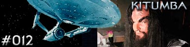

|

Escrito
por John Meredyth Lucas
A Enterprise embarca
para o planeta-natal Klingon em uma misso potencialmente suicida
que consiste em prevenir uma guerra dos Klingons com a Federao.
Auxiliado por um guerreiro Klingon de nome Ksia, que no acredita
que haver sobreviventes em ambos lados com uma guerra destas
propores, Kirk e cia. conseguem descer superfcie do
planeta. L eles encontram o lder do povo Klingon, o Kitumba,
uma criana.
Kirk faz o melhor de si para convencer o Kitumba de que uma invaso
ao espao da Federao seria desastroso para os dois lados. O
capito parece estar ganhando a confiana da criana, mas
percebe que nem assim conseguir evitar o iminente conflito.
Malkothon, o conselheiro de guerra do Kitumba, j comeou os
planos para a invaso sem o conhecimento dele e planeja
assassinar a criana para que seu malevel irmo, Klun, assuma
o poder. Kirk consegue derrotar o conselheiro em uma luta
desarmada, e Malkothon comete suicdio. O Kitumba percebe que
seria um erro brutal entrar em conflito com a Federao e a paz
mantida.
Curiosidades
 A estrutura
poltica do Imprio Klingon vista a partir da Nova Gerao
completamente diferente da que seria apresentada aqui. A estrutura
poltica do Imprio Klingon vista a partir da Nova Gerao
completamente diferente da que seria apresentada aqui.
O autor do
episdio, John Meredyth Lucas, escreveu os episdios "Elaan
of Troyius" e "Pattern of Force" da Srie
Clssica, alm do roteiro de "That Which Survives".
O episdio
foi escrito em duas partes, para ser exibido em duas datas
diferentes. Por esta razo so considerados 13 os episdios
roteirizados para a Fase II.
Episdio
anterior |